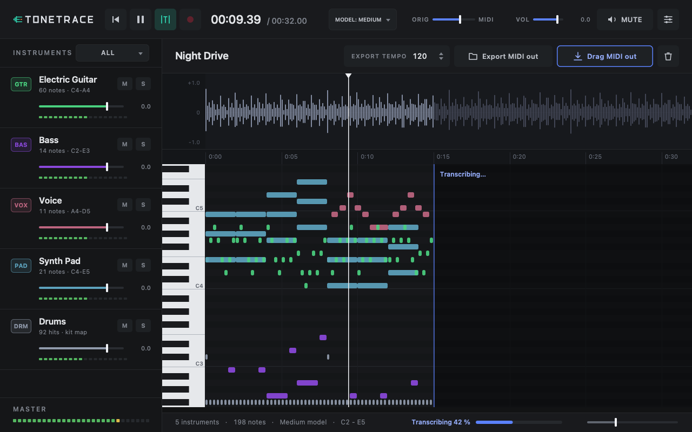
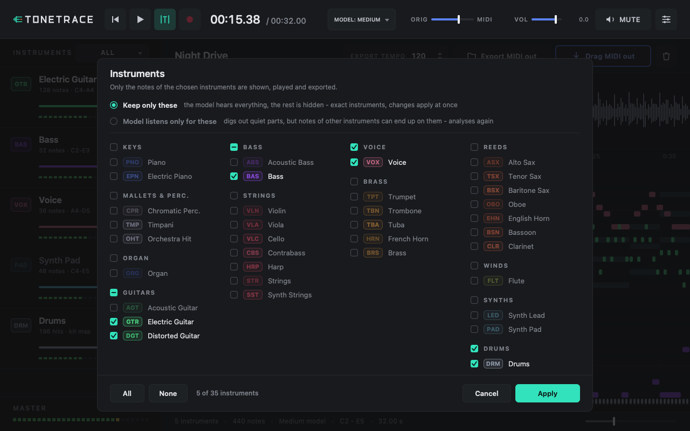
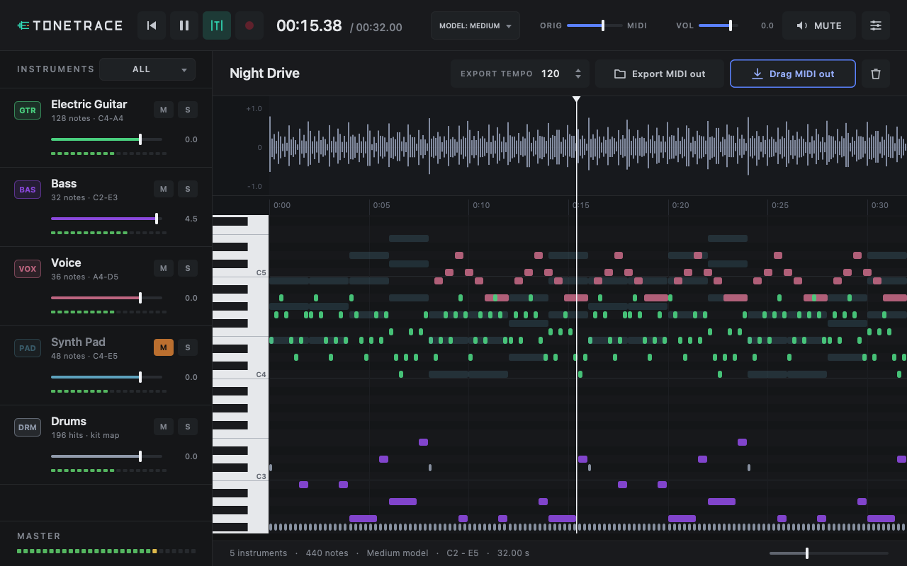

Drop a song into Tonetrace and it transcribes every instrument, drums included. Press play while the notes appear, then drag one MIDI track per instrument straight into your DAW.
FreeVST3 plug-inApple SiliconRuns 100% locally

No stem splitting, no extra apps, no uploads. Tonetrace sits on a track in your DAW and does the whole job there.
Drag a wav, aiff, mp3, m4a, flac or caf file into the window, or hit record and play a track from your session.
The MuScriptor model works through the song in 5-second chunks. Each one lands in the piano roll as soon as it is done, and you can listen right away.
Set the export tempo and drag MIDI out into your arrangement: one named track per instrument, drums on channel 10.
Built for producers who want the parts of a song, not just its melody.
Guitars, bass, keys, strings, brass, voice, synths and drums, all transcribed from a single mixed file.
Playback starts seconds after the file loads. Blend the original and the notes with the ORIG to MIDI slider.
Kicks, snares, hats and cymbals come out as General MIDI drum notes, ready for any drum rack.
Each detected instrument gets its own strip with colour, note count, range, mute, solo, fader and meter.
Standard MIDI type 1 with track names and program changes. Mute and solo decide what gets exported.
Your audio never leaves your Mac. The model runs on the Apple Silicon GPU; the only download is the model itself.
Open the picker next to Instruments and choose from all 35 instruments the model knows, grouped by family. Click a family to toggle it as a whole.

Waveform on top, piano roll below. Click to move the playhead, pinch to zoom, follow mode keeps the music in view.

Switch any time from the Model menu. A loaded song is re-analysed straight away while it keeps playing. Each size downloads once and stays on your Mac.
Fastest. Good for sketching ideas and quick checks.
The sweet spot. A 5-minute song in about two minutes.
Most accurate and slowest. Needs about 3 GB of memory.
Free for non-commercial use. One ZIP with the VST3 plug-in and an install script.
The script copies the plug-in to your VST3 folder and signs it locally.
unzip Tonetrace-5.1.0-macOS.zip
cd Tonetrace-5.1.0
./install.shAbleton Live: Settings › Plug-Ins › turn on Use VST3 Plug-In System Folder and rescan.
FL Studio: Options › Manage plugins › Find plugins.
Open the window and drag in a song. The first run downloads the model; the song is already playable meanwhile.
xattr -dr com.apple.quarantine ~/Library/Audio/Plug-Ins/VST3/Tonetrace.vst3Yes. The transcription model behind it, MuScriptor, is released under CC BY-NC 4.0, so Tonetrace may only be used for non-commercial purposes.
No. Everything runs locally on your Mac. Tonetrace only goes online once per model size to download the weights from Hugging Face.
On real recordings it picks up melodies, bass lines, chords and drums well, and the Large model gets closest. Very synthetic sounds such as a bare sine wave are less reliable. Tonetrace does not predict velocity (all notes are 100), and two parts played on the same instrument end up on one track.
Not yet. Set Export tempo to the song's tempo before exporting. By default it follows your host tempo.
Tonetrace focuses on getting the notes out. Mute, solo and the instrument picker shape what you export; do the detailed editing in your DAW's piano roll.
Any VST3 host on macOS, including Ableton Live and FL Studio. AU and AAX versions are not available.
Run ./uninstall.sh from the ZIP. Models and settings live in ~/Library/Tonetrace; delete that folder to remove them too.